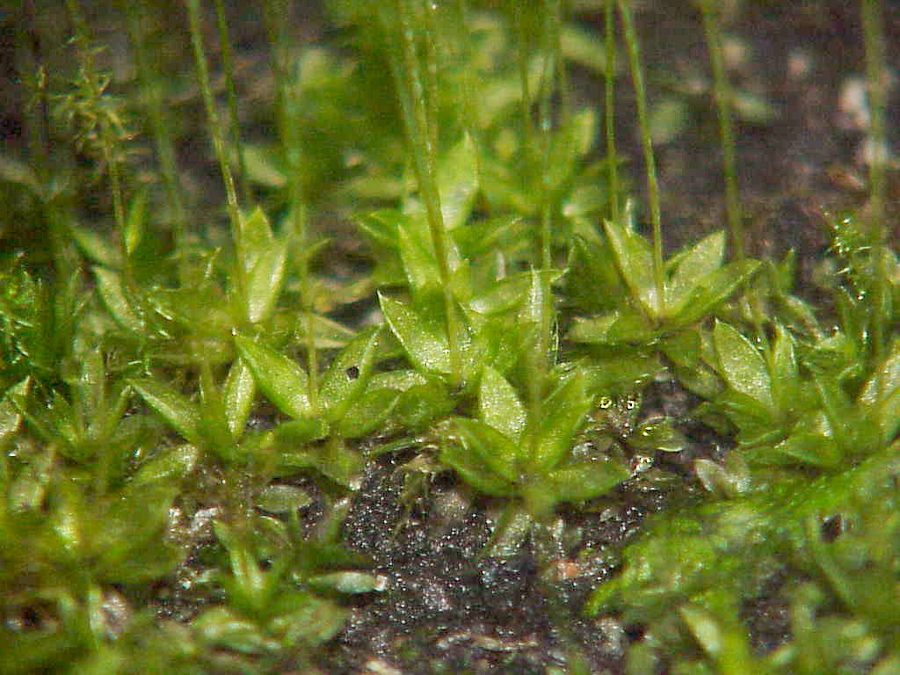

काईCord Moss
Funaria hygrometrica · Funariaceae · FLR-0026

- Scientific name
- Funaria hygrometrica Hedw.
- Family
- Funariaceae
- Hindi
- काई / भूमि काई
- Status here
- native
- IUCN
- LC
When to look कब देखें
Expected mainly in January, February, March, July, August, September, October, November, December.
काई / Cord Moss
Funaria hygrometrica Hedw. — Funariaceae
काई — मिट्टी की दीवारों, ईंटों की दरारों, और हर उस जगह जहाँ ज़मीन नम हो और थोड़ी रोशनी — वहाँ यह हरी मखमली काई उग आती है। दुनिया की सबसे आम और सबसे पहले उगने वाली काईयों में से एक। मानसून की पहली बारिश के एक-दो हफ्ते बाद दिखने लगती है। अक्टूबर-दिसंबर में लाल-नारंगी डंडियों पर नाशपाती जैसे बीजाणु-कैप्सूल उगते हैं — पहचान का सबसे अच्छा समय। सूखे में सिकुड़ जाती है लेकिन मरती नहीं — पानी मिलते ही घंटों में हरी हो जाती है। जंगल बसाने की शुरुआत अक्सर इसी से होती है।
Quick Identification त्वरित पहचान
| Feature | Description |
|---|---|
| Size | 0.5–3 cm tall; cushion-forming mats on damp surfaces |
| Colour | Bright green to yellow-green (gametophyte); reddish-orange seta; brown capsule |
| Leaves | 2–3 mm; soft, ovate-lanceolate; overlapping rosette; midrib (costa) visible |
| Sporophyte | Pear-shaped drooping capsule on 2–4 cm twisted reddish stalk |
| Hygroscopy | Dry seta twists tightly; wet seta straightens — visible movement with humidity changes |
| Habitat | Moist bare soil, brick walls, fire-affected ground — first coloniser |
Field tip: The twisted reddish stalk with a drooping pear-shaped capsule is unmistakable October–December. On a dry day the stalk coils tightly; after rain it straightens — you can watch this in real time. Found on any bare moist wall or disturbed soil patch within weeks of the first monsoon rain.
Morphology आकारिकी
| Feature | Measurement |
|---|---|
| Gametophyte height (leafy shoot) | 0.5–3 cm |
| Leaf length | 2–3 mm |
| Leaf width | 1–1.5 mm |
| Seta (stalk) length | 2–4 cm |
| Capsule dimensions | 2–3 mm × 1–1.5 mm |
| Spore diameter | 14–20 µm |
Gametophyte (the green leafy stage — what you see):
- Bright green to yellow-green rosettes of overlapping leaves
- Leaves 2–3 mm long, soft, ovate-lanceolate, with a central nerve (costa)
- Forms cushion-like protonema mats initially, then leafy shoots
- Height: 0.5–3 cm
Sporophyte (spore capsule — the brown stalked stage):
- Seta (stalk): 2–4 cm, reddish-orange, distinctly twisted when dry — hygroscopic, untwisting in humid conditions
- Capsule: pear-shaped, drooping, green when young turning brown at maturity; asymmetric with a long curved neck
- Operculum (lid): conical, falls off to release spores
- Peristome teeth: two rings of 16 teeth that open/close with humidity, actively catapulting spores
Ecological Role पारिस्थितिक भूमिका
Pioneer coloniser — the first responder of bare soil. Funaria hygrometrica is one of the earliest macroscopic colonisers of bare, disturbed, or fire-affected soil in the tropics and subtropics. It prepares the ground for subsequent colonisation by vascular plants by:
- Retaining soil moisture beneath the cushion
- Reducing erosion on bare surfaces
- Contributing organic matter as the moss mat decomposes
- Creating microhabitats for soil microorganisms, springtails, and mites
Fire ecology specialist. Unusually, Funaria actively exploits burnt ground — its spores and protonema tolerate elevated pH and potassium from wood ash. It frequently dominates burnt patches in cropfields, stubble fires, and cremation-ground soils.
Soil crust formation. Dense mats contribute to biological soil crusts alongside cyanobacteria and algae, stabilising the topsoil surface and improving water infiltration.
Carbon and nutrient cycling. Though small, moss mats collectively hold significant water and nutrients, releasing them slowly. This buffering effect helps moderate nutrient loss during heavy monsoon rains on agricultural soils.
Life Cycle / Phenology जीवन चक्र
Funaria alternates between two distinct generations — a characteristic of all mosses (Bryophyta):
Gametophyte generation (dominant, persistent):
- Spore germinates → thread-like protonema → leafy gametophore plant
- Protonema phase: 2–4 weeks after spore landing on suitable substrate
- Leafy gametophore: persists through favourable conditions
Sporophyte generation (dependent, temporary):
- Sexual reproduction requires water — sperm swim to egg via surface moisture film
- Fertilised egg develops into sporophyte while attached to gametophyte — entirely dependent on the maternal plant
- Capsule matures in 4–8 weeks; most visible October–February in UP
- Each capsule releases ~50,000 spores; dispersed by wind and hygroscopic peristome catapulting
Seasonality in UP:
- Peak growth: monsoon onset (July) and cool post-monsoon months (October–December)
- Desiccation dormancy: April–June (hot dry season) — remarkable desiccation tolerance; revives fully within hours of re-wetting
- Year-round where walls or earthen structures provide permanent shade and moisture
Host Plants or Prey आहार
Not applicable — autotroph. Associates:
- Cyanobacteria and algae — cohabit in biological soil crusts
- Springtails (Collembola) — graze on protonema
- Tardigrades (water bears) — live in moss cushions in cryptobiotic state; revive with moisture
- Mites (Acari) — oribatid mites graze on decaying moss; important decomposers
Predators / Natural Enemies शत्रु
- Desiccation — the primary challenge; solved by remarkable desiccation tolerance
- Grazing invertebrates — slugs, snails, and springtails consume protonema and young shoots
- Fungal infection — Rhizoctonia and Pythium cause damping-off of dense mats in stagnant water
- Shading by vascular plants — as succession proceeds, taller plants shade out the moss mat
Agricultural / Human Relevance कृषि प्रासंगिकता
Indicator of soil disturbance. Funaria on a field bund or exposed soil signals recent disturbance, compaction, or low organic matter — useful as a quick field diagnostic.
Traditional medicine. Documented in Ayurvedic texts: paste applied to wounds for astringent properties; used in some folk traditions for headache.
Pollution tolerance / biomonitor. Mosses absorb elements directly from rainfall and substrate. Funaria near roadsides or industrial areas accumulates lead, zinc, and cadmium at measurable concentrations, making it a useful biomonitor of heavy metal contamination.
Culturally invisible. Despite being one of the most common plants in any village setting in UP, Funaria is almost never discussed or named by villagers beyond the generic kaai. An example of ecological blindness toward non-vascular plants — a gap this atlas aims to address.
Expected Locally स्थानीय रूप से अपेक्षित
Not a field record. Written from published accounts for eastern Uttar Pradesh. No confirmed local sighting yet — if you have seen it, that is what the atlas needs.
अभी तक स्थानीय पुष्टि नहीं। यह विवरण प्रकाशित स्रोतों से है, किसी अवलोकन से नहीं।
Appears reliably on moist earthen walls (mitti ki deewar), brick foundations, terracotta roof edges, and disturbed garden soil throughout Basti district within 1–2 weeks of the first good rain. Particularly dense on north-facing walls (less sun exposure), at the base of trees with drip from branches, and on soil around hand-pumps where water is constantly spilled. The reddish twisted stalks with drooping capsules are visible October–December — the best time to confirm identification beyond the green slime impression.
Distribution वितरण
Global range: Cosmopolitan; found on all continents including Antarctica, occurring in almost all terrestrial habitats from tropical lowlands to alpine heights.
In India: Widespread across all states and union territories, commonly found on disturbed soils and moist masonry throughout the plains and mountains.
In Uttar Pradesh: Abundant in central and eastern districts, particularly on damp clayey soils, village walls, and old brickworks.
In Basti district / eastern UP: Ubiquitous as a pioneer on exposed soils, shaded garden plots, hand-pump surrounds, and brick-kiln margins.
Range notes: No significant range changes documented; its presence expands seasonally with post-monsoon humidity.
Research Questions शोध प्रश्न
- Does Funaria colonise recently burned stubble fields in Basti district systematically — and if so, how quickly does it appear and how long does it persist before vascular plants overtake it?
- What is the tardigrade diversity within Funaria cushions in eastern UP — these microscopic animals are ecologically rich and virtually unstudied in this region?
- Do village populations of Funaria show measurable heavy metal accumulation near roadways, brick kilns, or diesel pump-irrigation sites?
- Is the desiccation-recovery mechanism of local Funaria populations different from populations in wetter climates — does the dry UP climate select for faster revival?
- Can Funaria be cultivated on fired brick surfaces as a low-cost building insulation and urban cooling intervention?
Similar Species मिलती-जुलती प्रजातियाँ
| Species | Key Difference |
|---|---|
| Physcomitrium pyriforme (Urn Moss) | Smaller capsule, erect rather than drooping; capsule symmetric; no twisted seta |
| Bryum argenteum (Silver Moss) | Silvery-white leaf tips; capsule more cylindrical; very common on pavements |
| Algal mats (Spirogyra, Vaucheria) | No upright leafy shoots; slippery texture; no spore capsules; purely aquatic |
Taxonomy & Classification वर्गीकरण
Original description. Funaria hygrometrica was described by Johann Hedwig in 1801 in Species Muscorum Frondosorum 172. Type locality: Europe. The genus name Funaria comes from the Latin funis (rope or cord), referring to the twisted seta of the sporophyte, and the species epithet hygrometrica refers to the water-receptive twisting behavior of the stalk.
Subspecies. Monotypic — no subspecies are currently recognised.
Family and order placement. Belongs to the order Funariales, family Funariaceae. The Funariaceae is a family of small, acrocarpous mosses, widely used as model systems in genetics and developmental biology (especially Physcomitrium patens).
Phylogenetic notes. The genus Funaria is monophyletic. Molecular studies place it as a key representative of the subclass Funariidae, which represents an early-diverging branch of true arthrodontous mosses.
IUCN status rationale. Classified as Least Concern (LC) by the IUCN Red List. It is a cosmopolitan and highly adaptable pioneer species, facing no conservation threats globally or regionally.
Photo Gallery फोटो गैलरी
Atlas Connections संबंधित प्रजातियाँ
- Indian Common Earthworm — operates in overlapping topsoil microhabitats (SFL-0002)
- Paddy — grows on bunds surrounding paddy fields post-harvest (FLR-0014)
- Asian Honey Bee — water gatherer at moist moss cushions (INS-0007)
References संदर्भ
- Hedwig, J. (1801). Species Muscorum Frondosorum, 172. Joannis Ambrosii Barthii, Lipsiae.
- Gangulee, H.C. (1969–1980). Mosses of Eastern India and Adjacent Regions. Books & Allied, Calcutta.
- Parihar, N.S. (1965). An Introduction to Embryophyta. Vol. I: Bryophyta. Central Book Depot, Allahabad.
- Botanical Survey of India — Bryophyte records for Uttar Pradesh.
- Vanderpoorten, A. & Goffinet, B. (2009). Introduction to Bryophytes. Cambridge University Press.
- GBIF Occurrence Data — Funaria hygrometrica, India (2026).
Source file: species/lower_plants/mosses/cord_moss.md